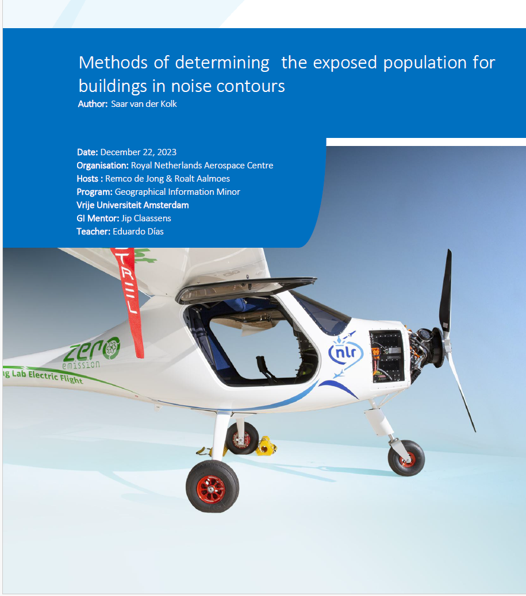
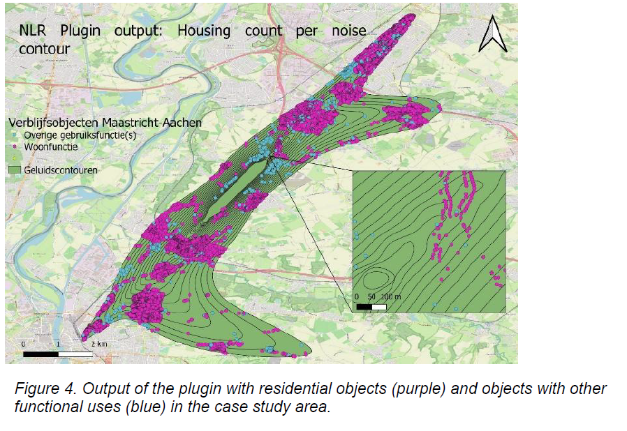
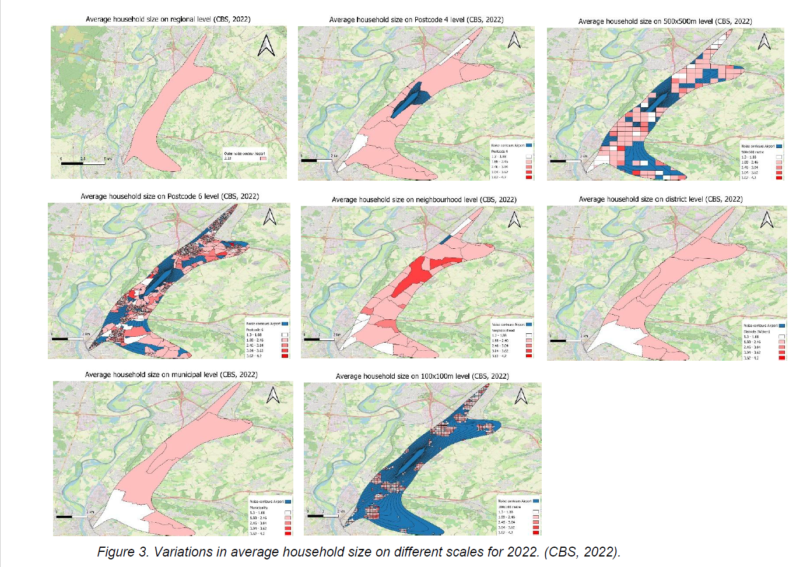
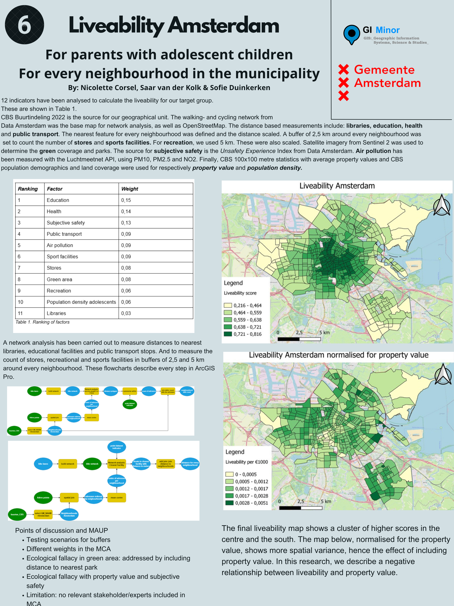
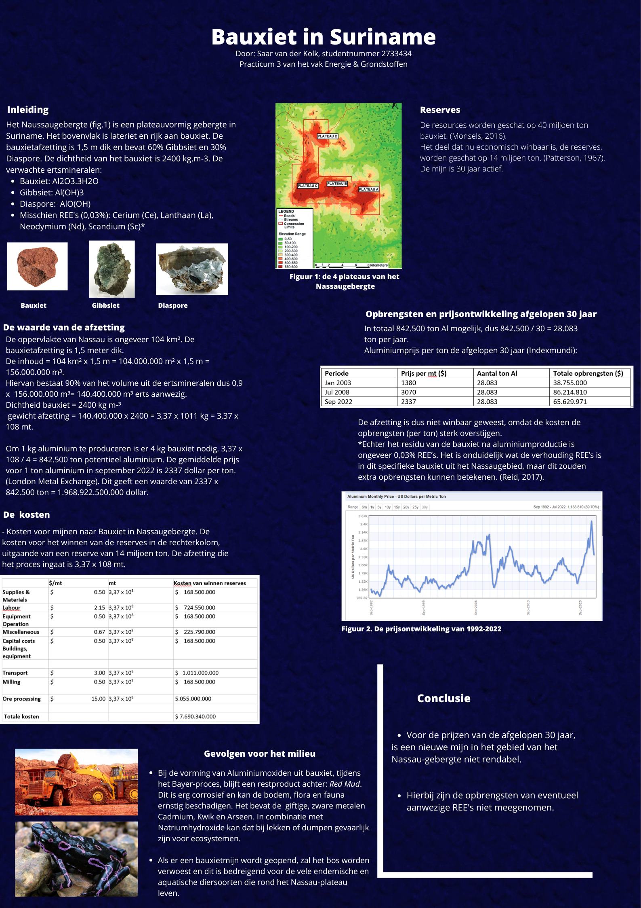
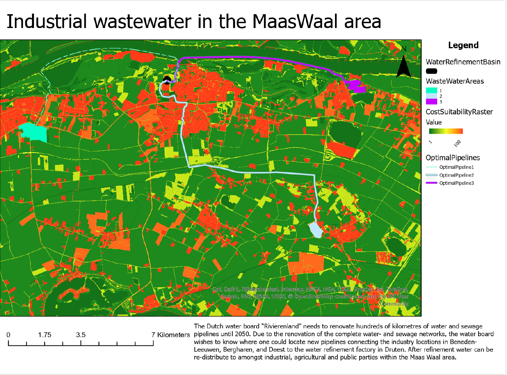

Indigenous Communities in Ontario
ArcGIS StoryMap · Canada

Hi, I'm Saar — a 22-year-old student from Wageningen University & Research studying Geo-Information Sciences. I'm interested in analysing environmental problems through spatial datasets and remote sensing products, building tools and surfacing insights that deepen our understanding of the world around us.
QGIS analysis to determine the number of people experiencing noise pollution from air traffic around Dutch airports.



Selected coursework spanning liveability mapping in Amsterdam, resource economics in Suriname, and applied GI tools.



Interactive StoryMaps produced during the MSc programme, combining cartography with narrative data journalism.
Open to collaborations, internships, and research conversations.